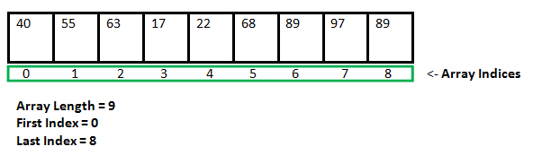

Basics
Dynamic memory allocation in C
Since C is a structured language, it has some fixed rules for programming. One of them includes changing the size of an array. An array is a collection of items stored at contiguous memory locations.

As can be seen, the length (size) of the array above is 9. But what if there is a requirement to change this length (size)? For example,
- If there is a situation where only 5 elements are needed to be entered in this array. In this case, the remaining 4 indices are just wasting memory in this array. So there is a requirement to lessen the length (size) of the array from 9 to 5.
- Take another situation. In this, there is an array of 9 elements with all 9 indices filled. But there is a need to enter 3 more elements in this array. In this case, 3 indices more are required. So the length (size) of the array needs to be changed from 9 to 12.
This procedure is referred to as Dynamic Memory Allocation in C.
Therefore, C Dynamic Memory Allocation can be defined as a procedure in which the size of a data structure (like Array) is changed during the runtime.
To allocate memory dynamically, library functions are malloc(), calloc(), realloc() and free() are used. These functions are defined in the stdlib.h header file.
malloc()
malloc()
- The malloc() function allocates single block of requested memory.
- It doesn't initialize memory at execution time, so it has garbage value initially.
- It returns NULL if memory is not sufficient.
Syntax
ptr = (cast-type*) malloc(byte-size)
calloc()
calloc()
- The calloc() function allocates multiple block of requested memory.
- It initially initialize all bytes to zero.
- It returns NULL if memory is not sufficient
Syntax
ptr = (cast-type*)calloc(n, element-size);
here, n is the no. of elements and element-size is the size of each element.
realloc()
realloc()
- “realloc” or “re-allocation” method in C is used to dynamically change the memory allocation of a previously allocated memory
- In other words, if the memory previously allocated with the help of malloc or calloc is insufficient, realloc can be used to dynamically re-allocate memory. re-allocation of memory maintains the already present value and new blocks will be initialized with the default garbage value.
Syntax
ptr = realloc(ptr, newSize);
where ptr is reallocated with new size 'newSize'.